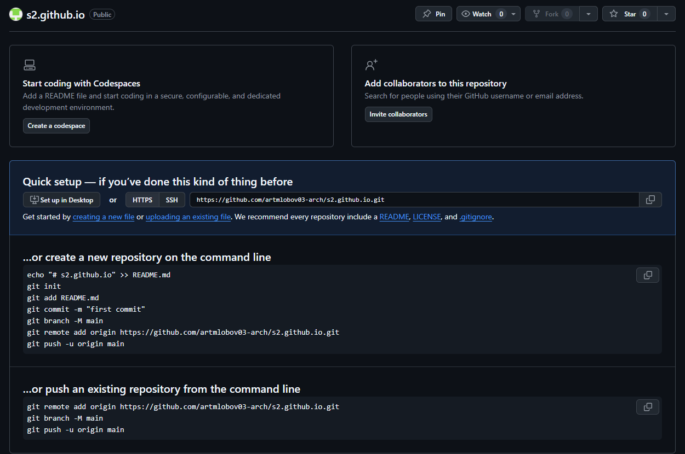
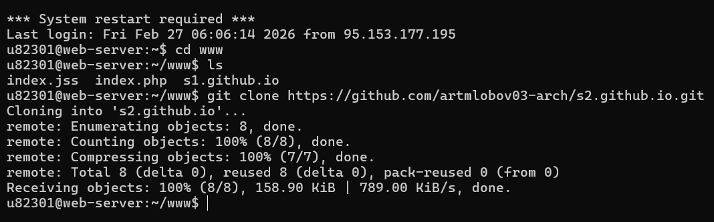
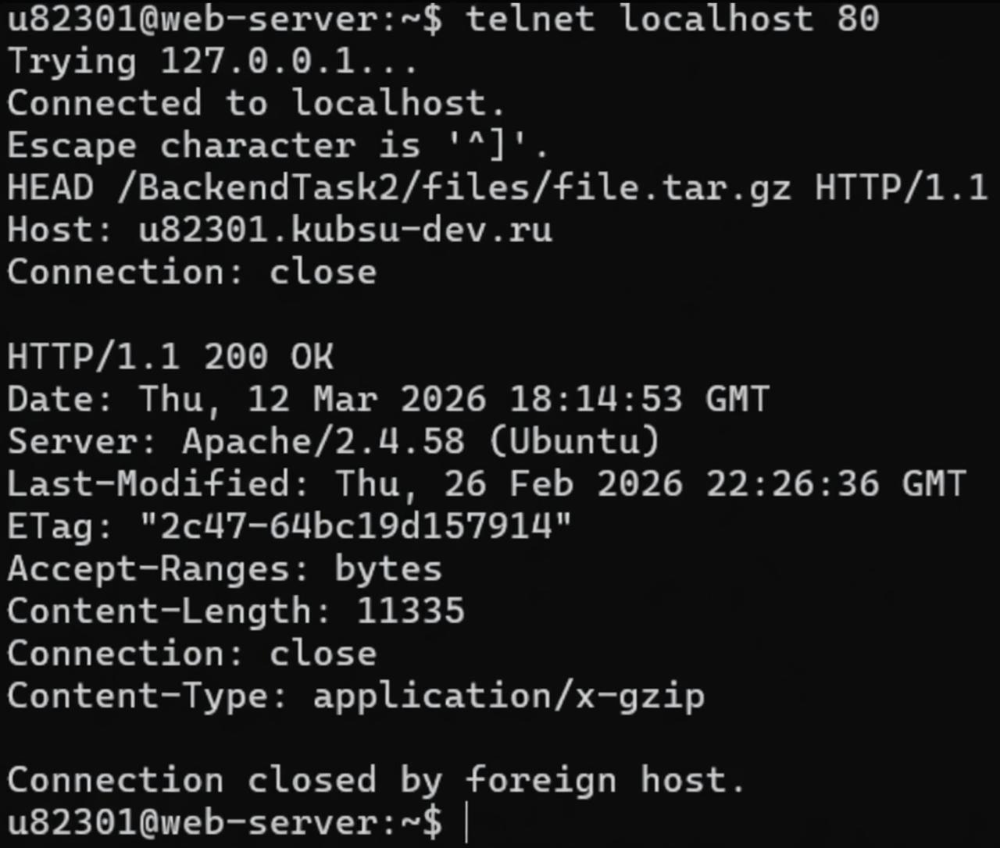
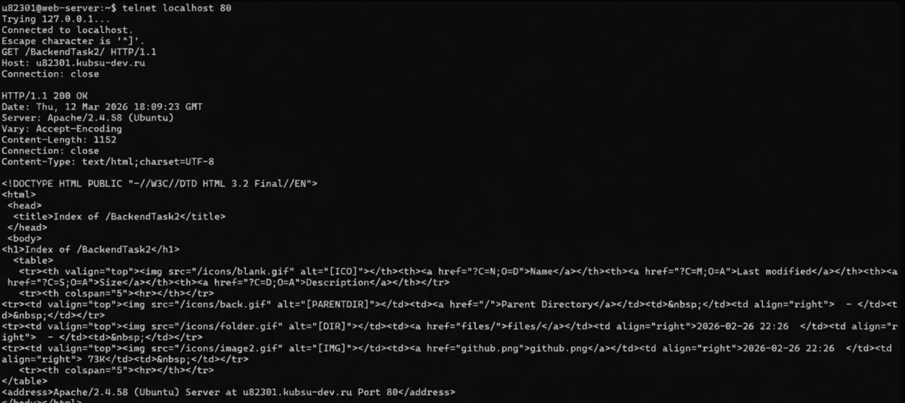

Необходимые файлы были добавлены в удалённый репозиторий GitHub и размещены на веб-сервере. После этого была проверена их доступность через браузер по учебному домену.


С помощью метода GET выполнен запрос к главной странице сервера с использованием протокола HTTP/1.0. В ответ были получены заголовки, подтверждающие обработку запроса веб-сервером.

Был отправлен GET-запрос к внутреннему каталогу сайта с использованием протокола HTTP/1.1. Для корректной обработки запроса был указан заголовок Host. В ответ сервер вернул информацию о ресурсе.

Для определения размера файла file.tar.gz был использован метод HEAD, который позволяет получить только заголовки ответа без загрузки самого файла. Размер файла определён по значению заголовка Content-Length.
Тип содержимого ресурса image.png был определён с помощью метода HEAD. В заголовках ответа сервера получено значение Content-Type, указывающее на формат передаваемых данных.
На сервер был отправлен POST-запрос к скрипту index.php с передачей данных формы. Данные были переданы в формате application/x-www-form-urlencoded. Сервер принял запрос и вернул ответ с результатом обработки.
Для получения части файла file.tar.gz был использован заголовок Range, позволяющий запросить только определённый диапазон байт. В результате сервер вернул первые 100 байт файла, что подтверждается кодом ответа 206 Partial Content.
Кодировка страницы index.php была определена с помощью метода HEAD. В заголовке Content-Type указано значение charset, которое определяет используемую кодировку документа.